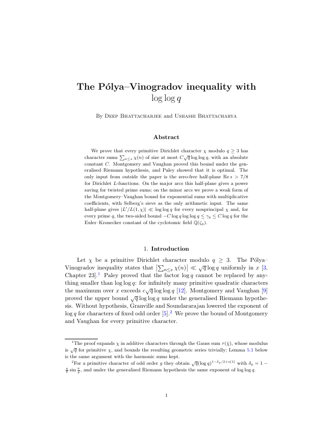
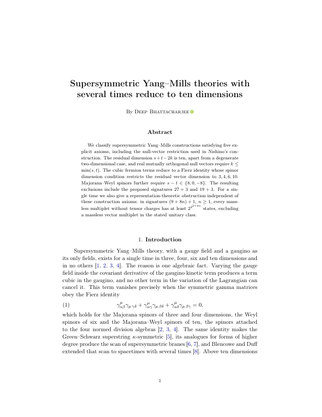
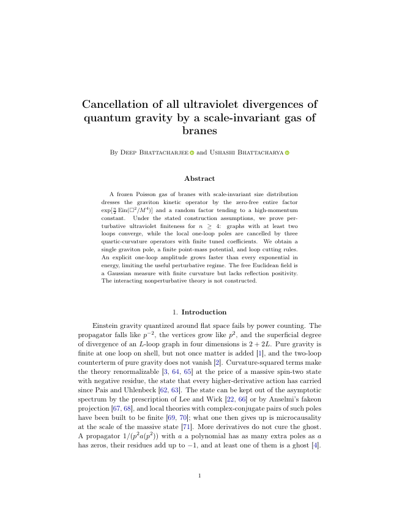
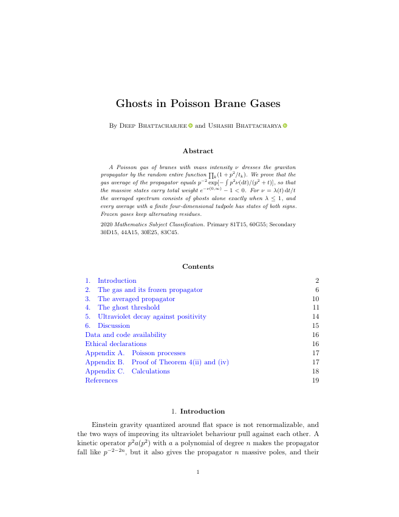
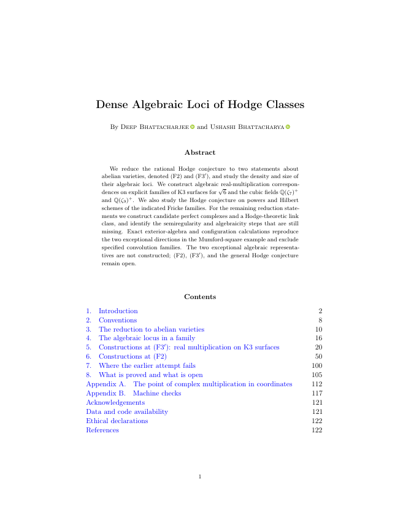
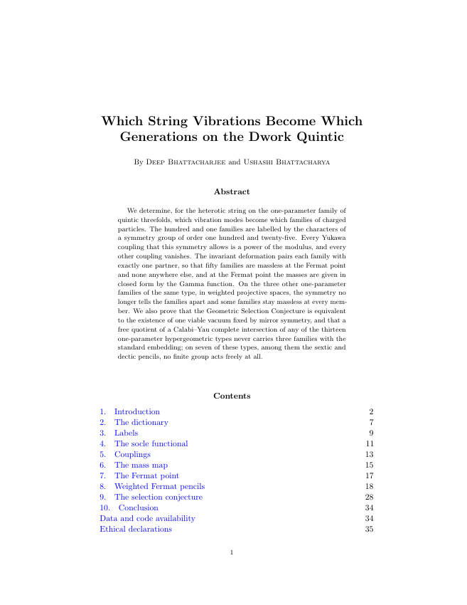
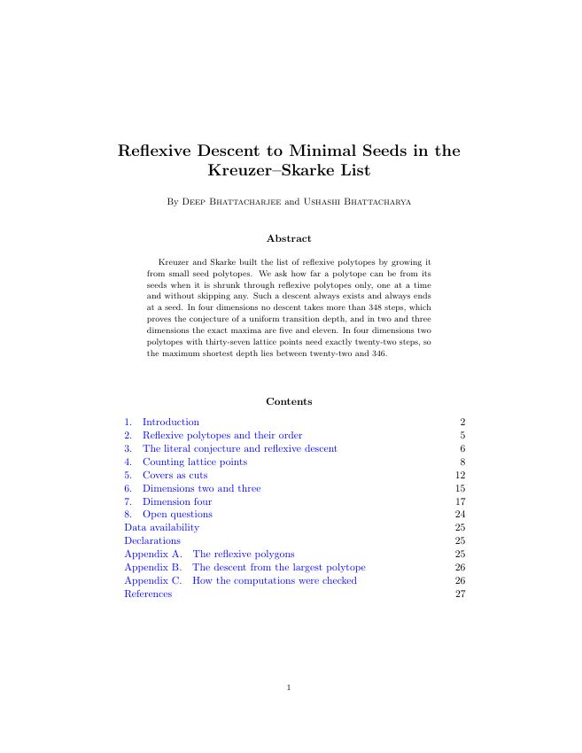
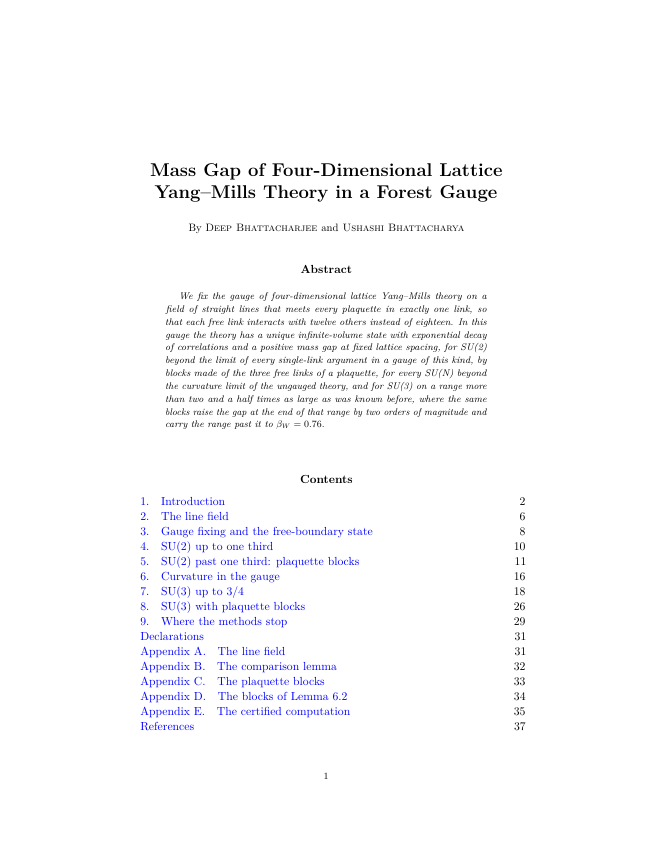

PAPER 01 · AOMARTPólya–Vinogradov7/8 input retainedScientific scopeThe paper retains the external 7/8 zero-free theorem. Its independent self-contained proof has not been supplied here.PDF ↗Source ZIPPublished releaseZenodo DOI ↗
PAPER 02 · AOMARTYang–Mills with several timesFive-axiom classificationScientific scopeThe classification is within the stated five-axiom framework. No broader classification is asserted.PDF ↗Source ZIPPublished releaseZenodo DOI ↗
PAPER 04 · AOMARTUltraviolet brane gasesPerturbative constructionScientific scopeThe claim concerns perturbative ultraviolet finiteness with the stated model assumptions and one-loop tuning. An interacting nonperturbative construction is missing.PDF ↗Source ZIPPublished releaseZenodo DOI ↗
PAPER 13 · AOMARTGhosts in brane gasesSpectral and residue resultsScientific scopeThe spectral, residue and ultraviolet trade-off statements retain their explicit Poisson-gas hypotheses.PDF ↗Source ZIPPublished releaseDOI verification pending
PAPER 05 · AOMARTAlgebraic loci of Hodge classesF2 and F3′ remain openScientific scopeF2 and F3-prime remain open. The two exceptional directions have not been represented by constructed algebraic cycles.PDF ↗Source ZIPPublished releaseZenodo DOI ↗
PAPER 07 · AOMARTGenerations on the Dwork quinticGSC vacuum remains openScientific scopeNo vacuum satisfying all nine GSC conditions has been constructed. The manuscript retains its explicit family calculations.PDF ↗Source ZIPPublished releaseZenodo DOI ↗
PAPER 08 · AOMARTReflexive descent to seeds22 ≤ D₄ ≤ 346, census-relativeScientific scopeThe new bound is D4 <= 346 relative to the supplied census. The sharp D4 is unknown. The existing lower bound is 22; every-descent bound 348 is unchanged.PDF ↗Source ZIPPublished releaseZenodo DOI ↗
PAPER 09 · AOMARTLattice Yang–MillsFixed-spacing lattice regimeScientific scopeThe results concern the stated fixed-spacing lattice strong-coupling regime. The continuum Yang-Mills mass gap has not been constructed.PDF ↗Source ZIPPublished releaseZenodo DOI ↗